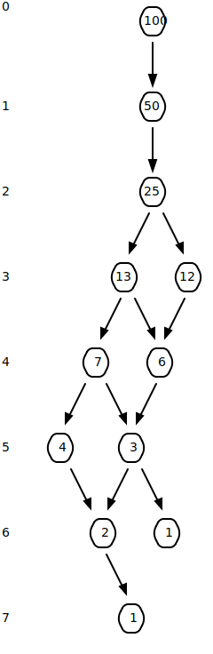

The egg tower puzzle
Here is a fun puzzle:
You are given two eggs, and access to a 100-storey tower. Both eggs are identical. The aim is to find out the highest floor from which an egg will not break when dropped out of a window from that floor. If an egg is dropped and does not break, it is undamaged and can be dropped again. However, once an egg is broken, that’s it for that egg.
If an egg breaks when dropped from a floor, then it would also have broken from any floor above that. If an egg survives a fall, then it will survive any fall shorter than that.
The question is: What strategy should you adopt to minimize the number egg drops it takes to find the solution? (And what is the worst case for the number of drops it will take?)
Once you solved it for two eggs, can you solve it for three eggs? Can you find a generalized solution when you have a tower with \(x\) floors and if you have \(N\) eggs?
Spoiler warning! If you have not seen this problem before I urge you to give it a go before continuing further. I’m going to post the solution to this below, so this is your spoiler warning.
If you are interested in an easy to understand intuitive explanation to the \(2\) egg \(100\) storey tower problem, check out the following video:
We will go through this problem for the \(2\) eggs and \(3\) eggs variant, and derive the solution mathematically. Then, we will generalize the problem with \(x\) floors and \(N\) eggs.
Two eggs
We have \(2\) eggs to start with and a \(100\) storey tower to explore.
Let’s consider what we would do if we had just one egg.
With just one egg, we could drop the egg from floor \(1\). If it breaks, we stop and can definitively say that for any floor \(1\) and above all eggs would break. If it doesn’t break, we can proceed to floor \(2\) and repeat.
This means that for a tower with \(100\) floors we will need up to \(100\) drops to definitively say at which floor the egg would break. The above strategy gives us the minimum number of drops to guarantee that we find at which floor the egg would break. Or in other words, we can search \(N\) floors with \(N\) drops. Let’s call the lowest floor in the tower at which a egg would break the breaking floor. Here, \(N\) is the breaking floor and \(N-1\) is the highest floor from which an egg will not break. Once we can find the breaking floor, we can find the solution to this puzzle. The aim of this puzzle is to minimize the worst case when trying to guarantee finding the breaking floor.
What could we do differently with \(2\) eggs?
With \(2\) eggs, in fact we can explore the search space more efficiently. We can use the first egg to partition the total number of floors, and once the first egg breaks we can use the second egg to search floors within the last partition.
As an example, let’s say you decide to drop the first egg from every \(10^{th}\) floor. If it doesn’t break at floor \(10\), \(20\), \(30\), \(40\) or \(50\) but breaks at floor \(60\) you can use the second egg to explore floors \(51\) - \(59\). If it finally breaks at floor \(59\), you would have used \(6\) drops of the first egg and \(9\) drops of the second egg to find the breaking floor.
We can do even better though.
Let’s assume that the minimum number of drops required to guarantee finding the breaking floor for a \(N\) storey tower is \(x\). If when we drop the first egg and the egg breaks, we can use \(x - 1\) drops of the second egg to find the breaking floor. We already know that we can search at most \(x - 1\) floors with the \(1\) egg using \(x - 1\) drops. So if our first drop was from a floor greater than \(x\), we would not be able to guarantee finding the solution to this problem. This means that if we have \(2\) eggs we would want to drop the first egg from floor \(x\), where \(x\) is also the minimum number of drops that will guarantee finding the breaking floor in a \(N\) storey tower.
When we drop the first egg from floor \(x\), if the egg breaks, we can use the second egg to find which floor from \(1\) to \(x - 1\) is the solution. If the egg doesn’t break, now we have used \(1\) drop. Let’s assume that the first egg breaks on the second drop. When this happens, we can use the remaining egg to explore \(x - 2\) floors with \(x - 2\) drops find the breaking floor. With \(x - 2\) drops, we can search from floor \(x + 1\) to floor \(x + (x - 2)\). This means that when we drop the first egg the second time, we should start from \(x + (x - 2) + 1\), i.e., \(x + (x - 1)\), to allow for finding the breaking floor.
If the egg doesn’t break on the second drop, we have now used \(2\) drops. If the egg is going to break on the third drop, we have to allow for searching \(x - 3\) floors with the second egg. This means we should drop the first egg on our third attempt from floor number \(x + (x - 1) + (x - 3) + 1\), i.e., \(x + (x - 1) + (x - 2)\). We can also say that with \(3\) drops and \(2\) eggs we are guaranteed to find the floor if it is within the first \(3 + (3 - 1) + (3 - 2)\) floors, i.e. \(6\) floors.
Seeing the pattern here?
For a \(N\) storey tower, we need to ensure that with \(x\) drops we cover all the floors of the tower. That gives us this constraint.
\[x + (x - 1) + (x - 2) + (x - 3) + \ldots + 1 >= N\]
Which can be rewritten as:
\[\sum_{k=1}^{x} k >= N\]
Or, in closed form as:
\[\frac{x \times (1 + x)}{2} >= N\]
We know \(N\) is \(100\) in this problem.
\[\frac{x \times (1 + x)}{2} >= 100\]
This tells us that with \(14\) drops we can guarantee finding the breaking floor in a tower with up to \(105\) floors.
Three eggs
We have already previously established the best strategy for \(1\) egg and \(2\) eggs.
Let’s define some terminology:
\[f_1(x) = x\] \[f_2(x) = \frac{x \times (1 + x)}{2}\]
where \(f_1(x)\) and \(f_2(x)\) are the number of floors that can be checked with \(1\) and \(2\) eggs respectively with \(x\) drops.
And we know that \(f_2(x)\) can be written as:
\[f_2(x) = \sum_{k=1}^{x} k\]
So if we have 3 eggs and if the first egg breaks on the first drop, we want to ensure that we can check \(f_2(x - 1)\) floors with the remaining \(x - 1\) drops. That means we should drop the first egg from floor:
\[1 + f_2(x - 1)\]
For the second drop, we can start from floor:
\[1 + f_2(x - 1) + 1 + f_2(x - 2)\]
For the third drop, we can start from floor:
\[1 + f_2(x - 1) + 1 + f_2(x - 2) + 1 + f_2(x - 3)\]
Seeing a pattern emerge again?
Similar to before, the total number of floors we can check is constrained by \(N\):
\[1 + f_2(x - 1) + 1 + f_2(x - 2) + 1 + f_2(x - 3) + \ldots + 1 >= N\]
This can be rewritten as:
\[\sum_{k=1}^{x-1} \left( 1 + f_2(k) \right) + 1 >= N\]
\[1 + \sum_{j=1}^{x-1} \left( 1 + \sum_{k=1}^{j} k \right) >= N\]
\[x + \sum_{j=1}^{x-1}\sum_{k=1}^{j} k >= N\]
which results in:
\[\frac{x^3 + 5x}{6} >= N\]
Solving this, we get \(9\) drops for \(3\) eggs. With just \(9\) drops, we can guarantee finding the breaking floor in a \(129\) storey tower.
\(N\) eggs
Let’s see if we can generalize this for \(N\) eggs.
With \(1\) egg and \(x\) drops, we know we can check \(x\) floors. Let’s define this as \(f(x, 1)\), i.e.:
\[f(x, 1) = x \tag{1}\]
where \(f(x, n)\) is the floors that can be checked with \(x\) drops and \(n\) eggs.
We can safely say that with \(0\) drops or \(0\) eggs we can check \(0\) floors.
\[f(0, n) = f(x, 0) = 0\]
So we can write Equation 1 as the following:
\[f(x, 1) = 1 + f(x-1, 1) + f(x-1, 0)\]
For \(2\) eggs and \(x\) drops, the number of floors we can check, i.e. \(f(x, 2)\), is:
\[f(x, 2) = \sum_{k=1}^{x} k \tag{2}\]
We can expand this as the following:
\[f(x, 2) = 1 + \sum_{k=1}^{x-1} k + x - 1\]
and substitute in Equation 1 to get:
\[f(x, 2) = 1 + f(x-1, 2) + f(x-1, 1)\]
And, for \(3\) eggs and \(x\) drops, the number of floors we can check, i.e. \(f(x, 2)\), is:
\[f(x, 3) = x + \sum_{j=1}^{x-1}\sum_{k=1}^{j} k\]
Again, we can expand it and rearrange some terms:
\[f(x, 3) = x + \sum_{j=1}^{x-2}\sum_{k=1}^{j} k + \sum_{k=1}^{x-1} k\]
\[f(x, 3) = 1 + x - 1 + \sum_{j=1}^{x-2}\sum_{k=1}^{j} k + \sum_{k=1}^{x-1} k\]
and substitute in Equation 2 to get:
\[f(x, 3) = 1 + f(x - 1, 3) + f(x - 1, 2)\]
We can see a pattern emerging here. The generalized equation can be written like so:
\[f(x, n) = 1 + f(x - 1, n) + f(x - 1, n - 1) \tag{3}\]
This is also known as a recurrence relation.
This result can be reasoned through intuition as well. To find the total floors you can check with \(n\) eggs and \(x\) drops, it will be \(1\) (your first drop) plus the maximum number of floors you can check with \(n\) eggs and \(x-1\) eggs (if the first egg does not break) plus the maximum number of floors you can check with \(n-1\) eggs with \(x-1\) eggs (if the first egg does break).
If we wanted to, we could expand this recurrence relation1.
1 Thanks to /u/possiblywrong for pointing this out [1].
Here is the expansion increasing the depth in the direction of number of drops:
\[f(x, n) = 1 + f(x - 1, n) + f(x - 1, n - 1)\]
\[f(x, n) = 3 + f(x - 2, n) + 2f(x - 2, n - 1) + f(x - 2, n - 2)\]
\[f(x, n) = 7 + f(x - 3, n) + 3f(x - 3, n - 1) + 3f(x - 3, n - 2) + f(x - 3, n - 3)\]
\[f(x, n) = 15 + f(x - 4, n) + 4f(x - 4, n - 1) + 6f(x - 4, n - 2) + 4f(x - 4, n - 3) + f(x - 4, n - 4)\]
\[f(x, n) = 31 + f(x - 5, n) + 5f(x - 5, n - 1) + 10f(x - 5, n - 2) + 10f(x - 5, n - 3) + 5f(x - 5, n - 4) + f(x - 5, n - 5)\]
\[f(x, n) = 63 + f(x - 6, n) + 6f(x - 6, n - 1) + 15f(x - 6, n - 2) + 20f(x - 6, n - 3) + 15f(x - 6, n - 4) + 6f(x - 6, n - 5) + f(x - 6, n - 6)\]
Eagle eye readers will notice a pattern.
It turns out that this expansion is related to the binomial coefficients.
If we had infinite number of eggs, you’d see that the first element is the only term that contributes to \(f(x, n)\), since the others will be \(0\) for \(x - d\) where \(d\) is the depth in the triangle. That is to say, if we had infinite eggs, with 6 drops we can guarantee checking 63 floors.
Using this, we can say that, with \(x\) drops we can guarantee checking \(2^x - 1\) floors if we had infinite eggs2.
2 If we had a finite number of eggs, an approximation of this recurrence can be made. See /u/mark_ovchain’s insightful comment on this thread for more information.
Implementation
Let’s implement this problem.
julia> println(VERSION)
1.4.0We can implement Equation 3 as a function:
julia> f(x, n) = x == 0 || n == 0 ? 0 : 1 + f(x - 1, n) + f(x - 1, n - 1)
f (generic function with 1 method)For \(1\) egg, the number of floors you can check is the number of drops you make.
julia> arr = 1:100;
julia> @test f.(arr, 1) == arr
Test PassedAnd, we can verify that it works for \(2\) eggs as well.
julia> @test f(14, 2) >= 100
Test Passed
julia> @test f(14, 2) == 105
Test PassedWe can implement this generally like so:
julia> function starting_floor(floors, n)
for x in 1:floors
if f(x, n) >= floors
return x
end
end
end
starting_floor (generic function with 1 method)And get the answer to the problem programmatically.
julia> starting_floor(100, 2)
14Using the function f, we can also generate a table that explores what is the maximum number of floors that can be check for various number of drops and eggs.
| 1 egg | 2 eggs | 3 eggs | 4 eggs | 5 eggs | 6 eggs | 7 eggs | 8 eggs | 9 eggs | 10 eggs | |
|---|---|---|---|---|---|---|---|---|---|---|
| 1 drop | 1 | 1 | 1 | 1 | 1 | 1 | 1 | 1 | 1 | 1 |
| 2 drops | 2 | 3 | 3 | 3 | 3 | 3 | 3 | 3 | 3 | 3 |
| 3 drops | 3 | 6 | 7 | 7 | 7 | 7 | 7 | 7 | 7 | 7 |
| 4 drops | 4 | 10 | 14 | 15 | 15 | 15 | 15 | 15 | 15 | 15 |
| 5 drops | 5 | 15 | 25 | 30 | 31 | 31 | 31 | 31 | 31 | 31 |
| 6 drops | 6 | 21 | 41 | 56 | 62 | 63 | 63 | 63 | 63 | 63 |
| 7 drops | 7 | 28 | 63 | 98 | 119 | 126 | 127 | 127 | 127 | 127 |
| 8 drops | 8 | 36 | 92 | 162 | 218 | 246 | 254 | 255 | 255 | 255 |
| 9 drops | 9 | 45 | 129 | 255 | 381 | 465 | 501 | 510 | 511 | 511 |
| 10 drops | 10 | 55 | 175 | 385 | 637 | 847 | 967 | 1012 | 1022 | 1023 |
| 11 drops | 11 | 66 | 231 | 561 | 1023 | 1485 | 1815 | 1980 | 2035 | 2046 |
| 12 drops | 12 | 78 | 298 | 793 | 1585 | 2509 | 3301 | 3796 | 4016 | 4082 |
| 13 drops | 13 | 91 | 377 | 1092 | 2379 | 4095 | 5811 | 7098 | 7813 | 8099 |
| 14 drops | 14 | 105 | 469 | 1470 | 3472 | 6475 | 9907 | 12910 | 14912 | 15913 |
| 15 drops | 15 | 120 | 575 | 1940 | 4943 | 9948 | 16383 | 22818 | 27823 | 30826 |
You’ll notice that the upper right corner of the table stays the same if you increase the number of eggs you have at your disposal. You can see this even more clearly in this visualization.

There’s a minimal number of drops required to guarantee that you will find the breaking floor, even if you have unlimited eggs.
If you want to check \(7\) floors, as long as you have more than \(3\) eggs, you can have to use a minimum of 3 drops to guarantee finding the breaking floor.
For 100 floors, it is \(7\) drops. If you had unlimited eggs, you would use the largest partition possible. That means dividing the total floors by \(2\).
Partitioning the floors equally or in other words bisecting the floors, and exploring the partition of interest using the same strategy is the most efficient way of finding the breaking floor.
So there you go! We have solved the general case for the egg and tower puzzle.
References
[1]
“Light Bulb Puzzle Solution.” [Online]. Available: https://possiblywrong.wordpress.com/2012/01/08/light-bulb-puzzle-solution/.
Reuse
Citation
BibTeX citation:
@online{krishnamurthy2020,
author = {Krishnamurthy, Dheepak},
title = {The Egg Tower Puzzle},
date = {2020-06-07},
url = {https://kdheepak.com/blog/the-egg-tower-puzzle},
langid = {en}
}
For attribution, please cite this work as:
D.
Krishnamurthy, “The egg tower puzzle,” Jun. 07, 2020. https://kdheepak.com/blog/the-egg-tower-puzzle.